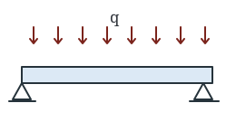
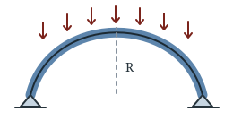
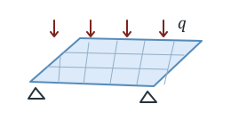

Bienvenidos
En esta página se amplía el estudio del comportamiento de los sólidos deformables para comprender cómo responden los elementos mecánicos y estructurales cuando se someten a distintas condiciones. A lo largo del curso se relacionan los modelos teóricos con el análisis de esfuerzos, deformaciones y resistencia.
Más allá de obtener resultados numéricos, se busca interpretar su significado físico, reconocer las hipótesis de cálculo y desarrollar un criterio técnico para evaluar componentes y estructuras.
Principales temas tratados
Explora las seis unidades académicas y consulta el material ya existente.

Esfuerzos
Bases del comportamiento elástico y deformaciones.
Explorar unidad
Criterios de Falla y Fatiga
Criterios de resistencia y cargas cíclicas.
Explorar unidad
Elementos Curvos
Esfuerzos y deformaciones en miembros curvos.
Explorar unidad
Placas Planas
Flexión de placas rectangulares y circulares.
Explorar unidad
Cilindros de Pared Gruesa y Volantes
Cilindros gruesos y elementos en rotación.
Explorar unidad
Vigas de Sección Variable
Análisis de vigas con geometría variable.
Explorar unidadAcerca de la plataforma
Este sitio académico fue desarrollado como un recurso de consulta para estudiantes de ingeniería y personas interesadas en Resistencia de Materiales. Organiza artículos, ejercicios resueltos y referencias para facilitar el estudio autónomo.
Conoce el proyecto